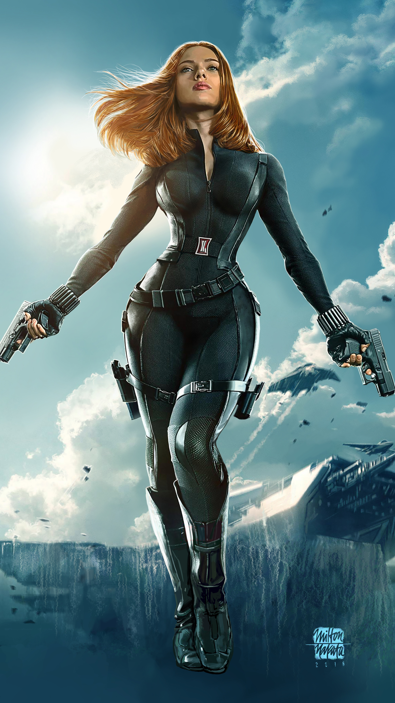
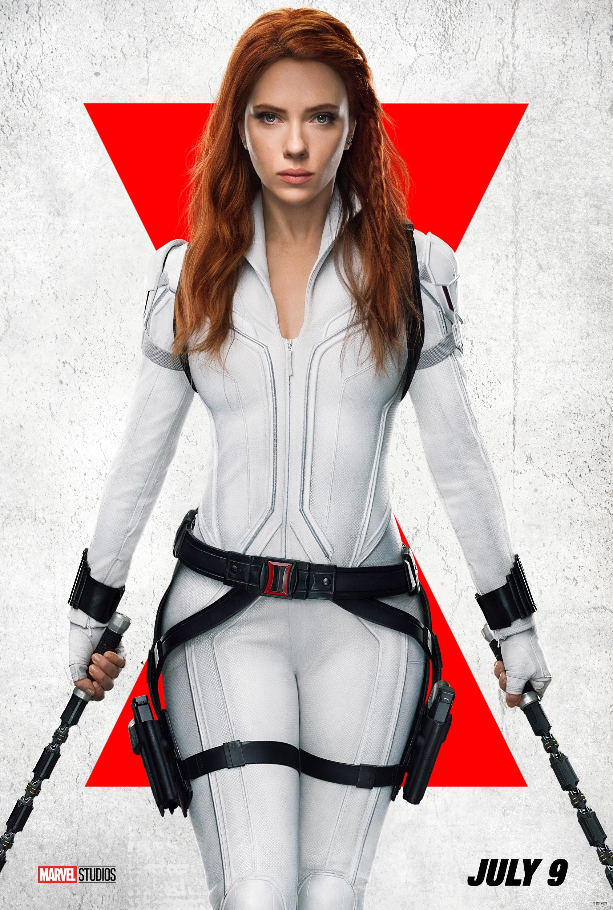
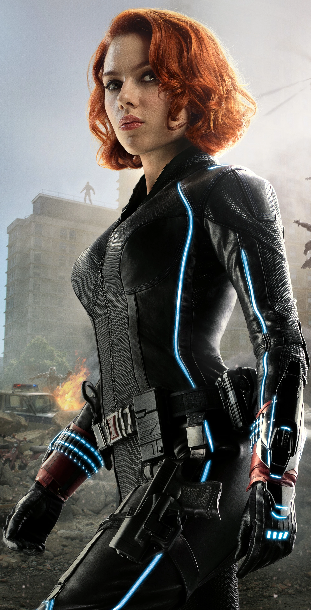

Histoire de Black Widow
Natasha Romanoff, connue sous le nom de Black Widow, est une ancienne espionne russe qui a rejoint le S.H.I.E.L.D. et les Avengers. Formée dans la Red Room, elle est une combattante redoutable et une experte en infiltration. Elle a joué un rôle clé dans la défense de la Terre et s'est sacrifiée pour récupérer la Pierre de l'Âme.
Faits intéressants
- Black Widow a été créée par Stan Lee, Don Rico et Don Heck en 1964.
- Elle a commencé comme une ennemie d'Iron Man avant de devenir une héroïne.
- Elle est l'une des rares Avengers sans super-pouvoirs.
- Son arme emblématique est le Widow's Bite, un bracelet électrifié.
Citations célèbres
- "Je fais ce que je fais de mieux : mentir et manipuler."
- "Même si je n'ai pas de super-pouvoirs, je suis une Avenger."
- "On a tous du sang sur les mains."
- "C'est notre devoir de protéger ceux qui ne peuvent pas se protéger eux-mêmes."
Galerie des Tenues de Black Widow


